For this layer we only need to worry about 4 edge pieces so that's nice.
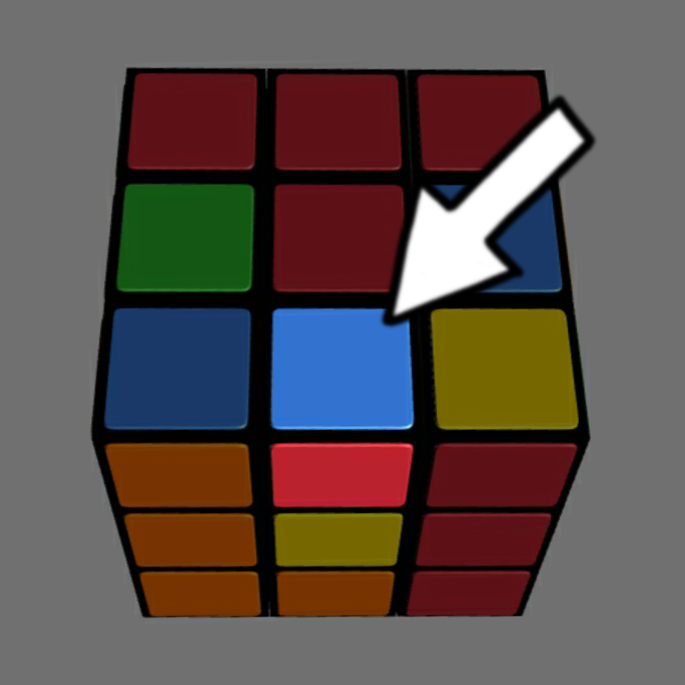
- First, look at the last layer and find an edge that doesn't have a yellow part. [Yellow, because it's the opposite of the white face. All the yellow pieces are going to be in the last layer. If you used a different starting color, sub this with the corresponding opposite color.]*
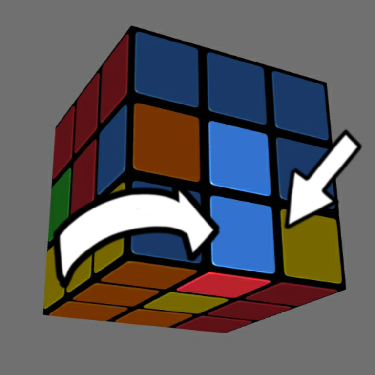
- Next, you align the piece to it's appropriate center. So just turn the layer so the piece's color that's facing you is aligned to it's center.
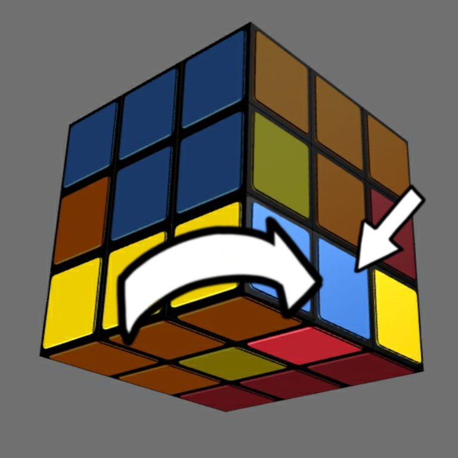
- Next, look at the color that's facing down. Then, you have to twist the piece away from that color's center. So like in this example, the color facing down is red. The red center is on the left, so you twist the last layer to the right.
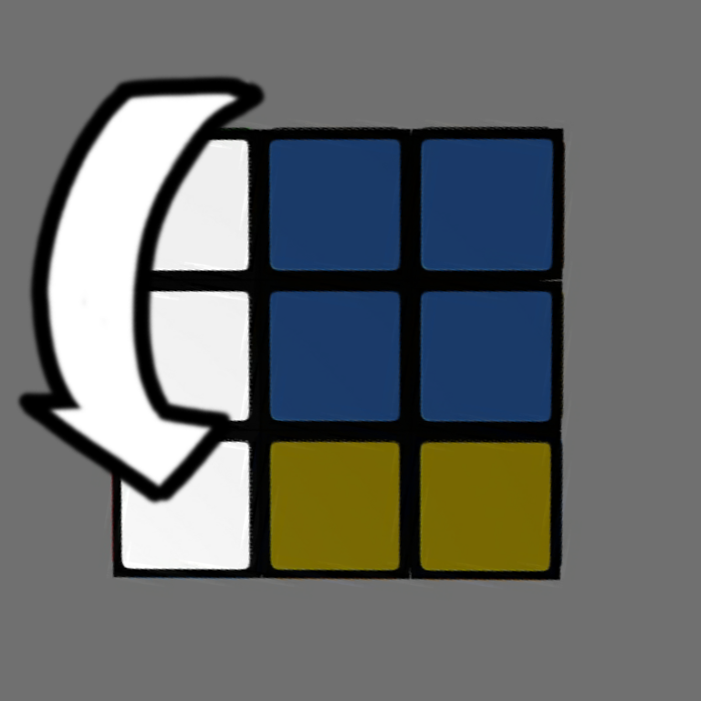
- Next, you bring down the column that's opposite of the direction you just twisted the layer to. So like in the example, you twisted the last layer to the right, so you bring down the leftmost column.
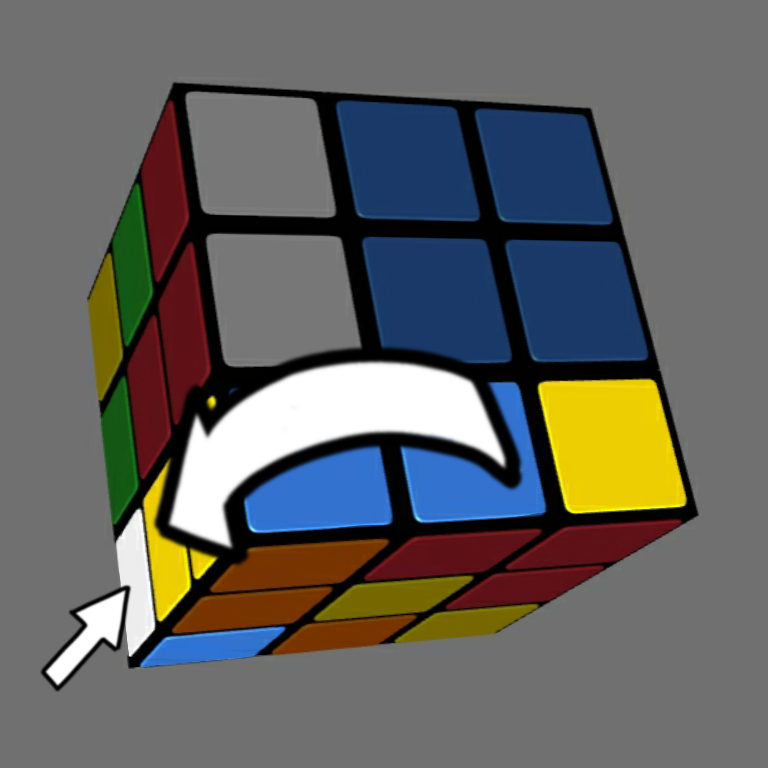
- Then, you twist the last layer back the way it was. So like in the example, if earlier you twisted it to the right, you twist it back to the left.
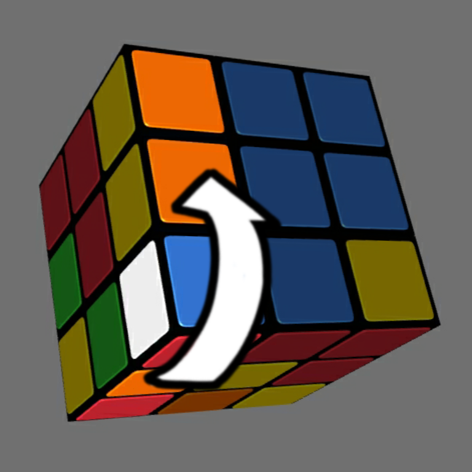
- Then, you bring the column you moved back up as well.
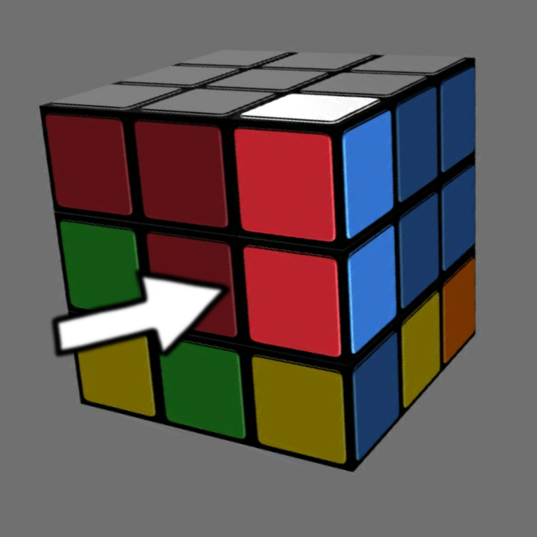
- From here, you'll notice that one of the corners from the first layer has been misplaced. All you have to do is actually repeat
the same step from the previous page.
When you do this, you'll have brought the edge piece into place along with the corner piece.
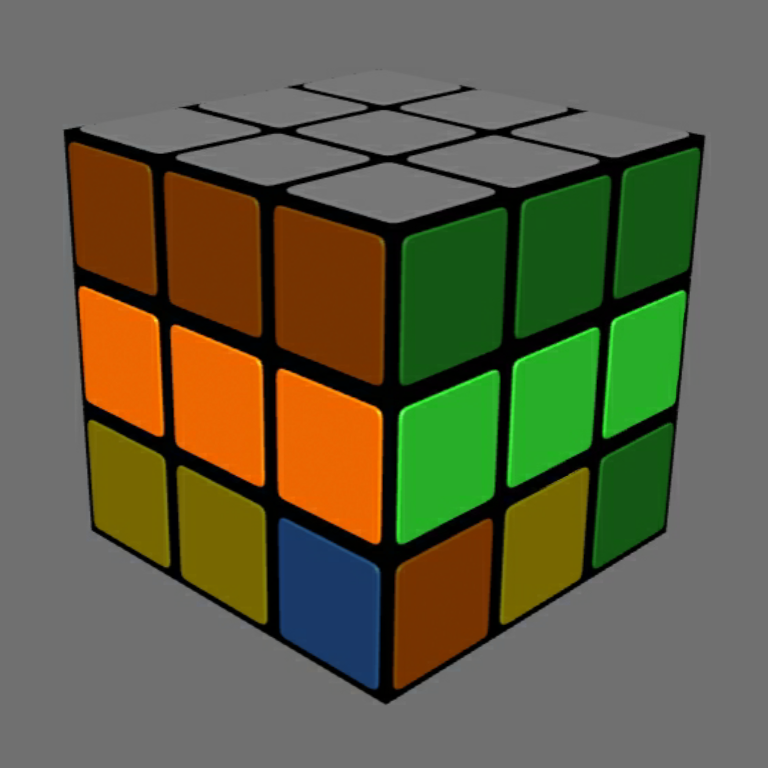
- Just repeat this for every edge until the middle layer is finished.
-
*What if there's no more suitable edge pieces on the last layer?
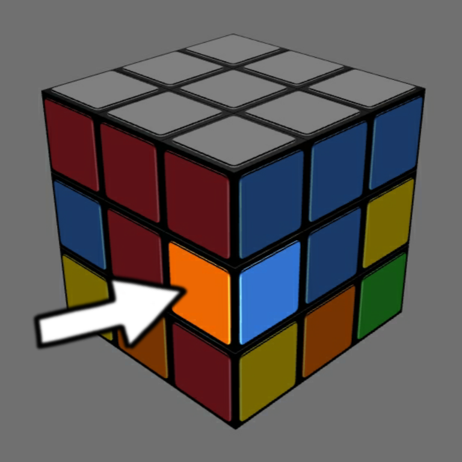
This means the edge piece(s) is in the middle layer. So you have to move it so that it's on the last layer. Which is actually a simple process, it's just the above steps, but with slight differences.
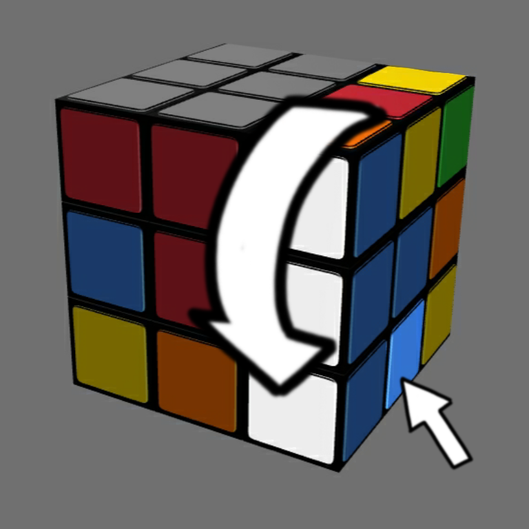
- Hold the cube with the white face up. Then, you move down the column with the edge piece you want to move down.
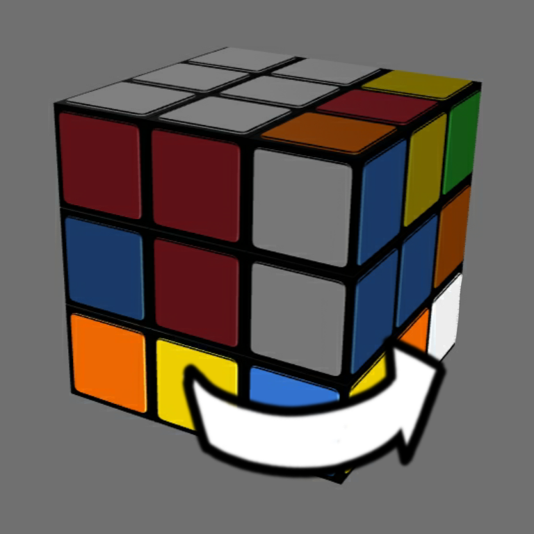
- Then, you have to twist the last layer to the direction of whichever column you moved. So like in the example, if the column you moved is the leftmost column, you twist the last layer to the left.
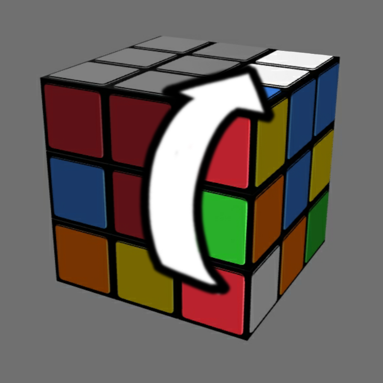
- Then, you move the column back up.
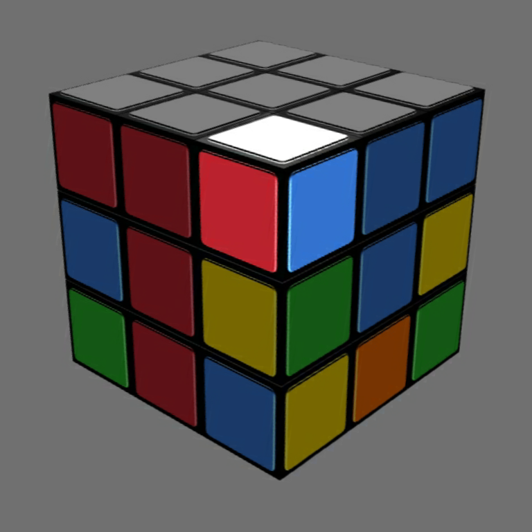
- Then, you just repeat the process of putting the corner back in. From then, the piece will now be somewhere on the last layer, and you can perform the
process.
-
*What if the edge is in the right place, but with the wrong orientation?
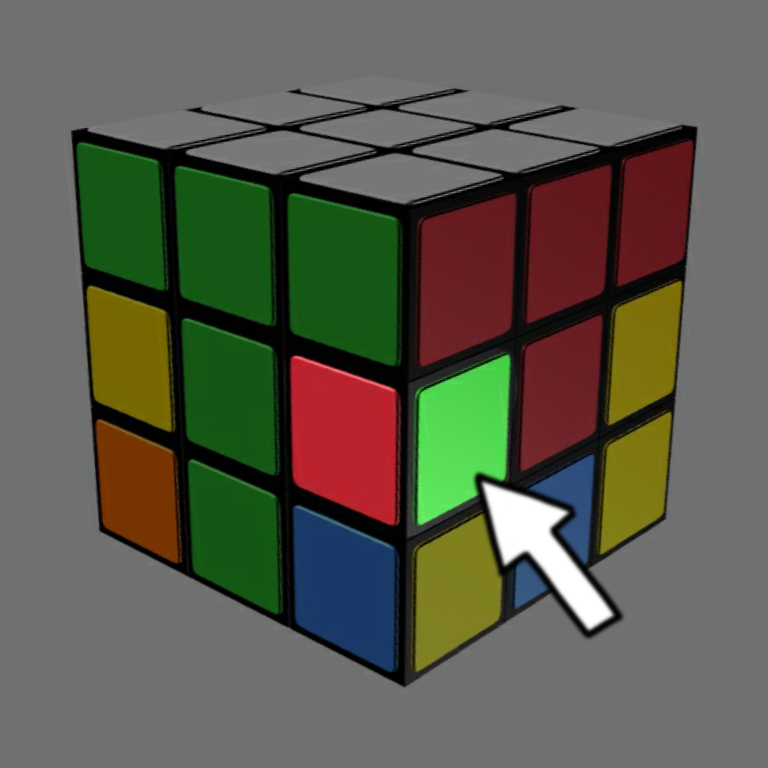
You just have to move it back down to the last layer. So, it's the same as the process above.


wca:
thesergsb:
rubiks official: